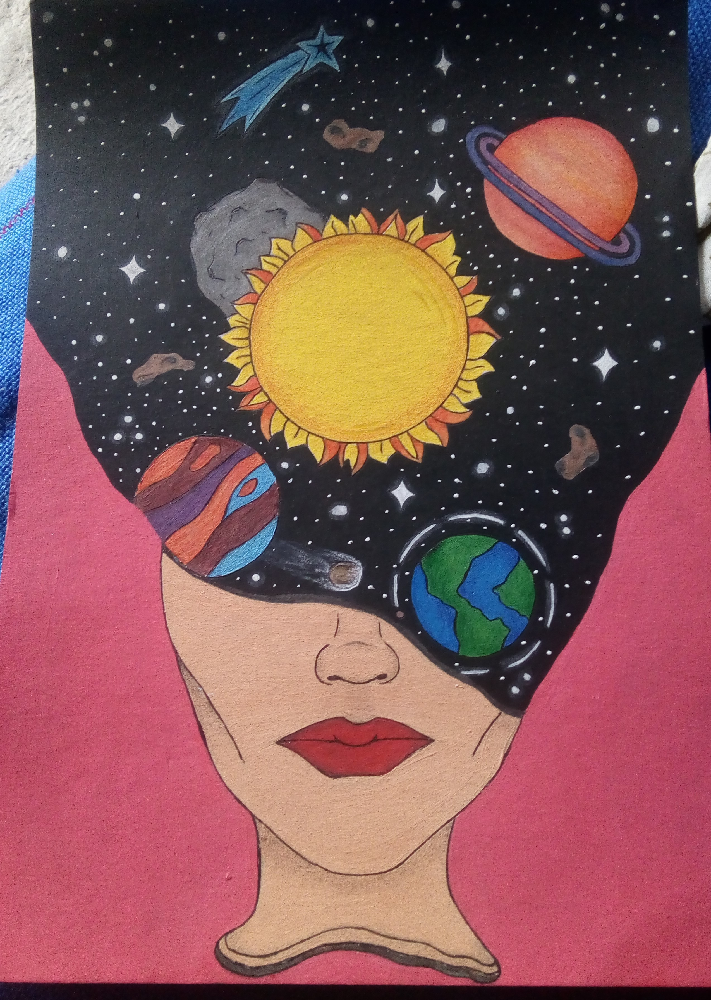
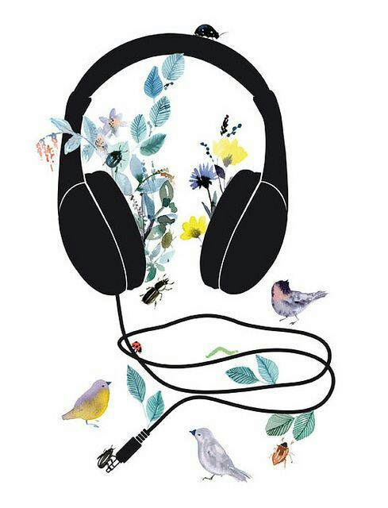
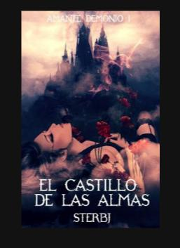
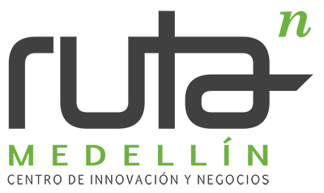
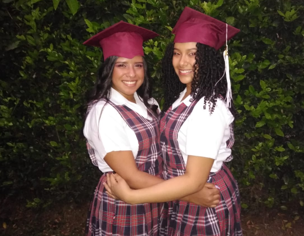
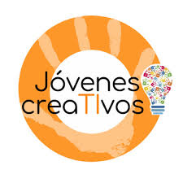

QUIEN SOY
Hola, soy Gina, tengo 18 años y considero que soy una persona muy creativa, toda mi
vida me ha gusta el arte y lo que esto puede llegar a reprentas, en estos dos años he podido aprender sobre
la programacion y lo que mas me ha gustado en el diseño wed, ya que ha sido todo un reto para mi pasar
del paper a una consola.En un futuro no muy lejano espero esudiar muchas cosas, como artes, psicologia
y un poco de reposteria. Se que tarde que temprano lo cumplirlo
HOBBIES
Lo que mas amo hacer es pintar porque creo que es una forma muy linda de expresar lo que siento o de pasar el rato.Mi mejor dibujo:

Otro de mis pasatiempo es escuchar musica, como la mayor parte de mi tiempo me la paso
hacendo trabajos en el computaron nunca me puede faltar la musica, asi es trabajo se me hace mas ameno y no lo siento tan duro

Algunas veces cuando termino de hacer mis trabajos me pongo a leer, me gutan los libros
de fantasia, esos que te tramportan a otro universo y te dejan pensando si puede que en realidad todo esos seres y cuentos si existen
.Mi libro favorito es el castillo de las almas.

ACTITUDES
Soy una persona alegre y optimista que ve el baso medio llego , porque no todo en la vida es malo y siempre hay algo de lo que
aprender, tambien soy una persona determinada, cuando se me mete algo a la cabeza lo tengo que hacer.
Se que cuando amo lo que hago mi desempeño es mucho mas alto e intento hacerlo de la mejor llegando a ser algo competitiva algunas veces
EMPRESAS
En estos momentos no tengo experiencia laboral pero me gustaria trabajar en empresas como:
Sofka es una empresa que domina muy bien su campo, posee personal bien capacitado y experto en brindar soluciones efectivas.Gracias a su equipo que desarrolla software de gran calidad
Ruta N es el centro de innovación y negocios de Medellín, una corporación creada por la alcaldía de Medellín, UNE y EPM para promover el desarrollo de negocios innovadores basados en tecnología, que incrementen la competitividad de la ciudad y de la región

Sistecrédito es una empresa especializada en el manejo de crédito de consumo
ESTUDIOS
1.
Este año me graduo como bachiller tecnico en Preogramacion de software y espero terminar la tecnica

2.
Jovenes creaTivos

PORTAFOLIO
Por el momento he realizado un proyecto para el SENA con dos compañeras.
El cual es una pagina wed para que una papeleria pueda vender sus procuctos
y llevar un registro de sus ventas realizadas.
IDIOMAS
Por el momento no he tenido la oportunidad
de aprender otros idiomas, pero me gustaria aprender portuges, italiano y el ingles
.png)